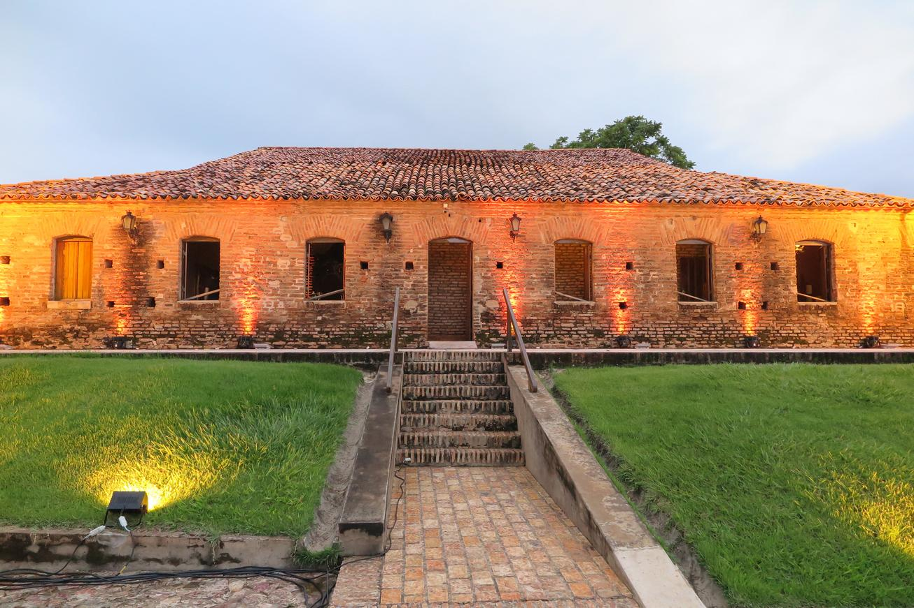
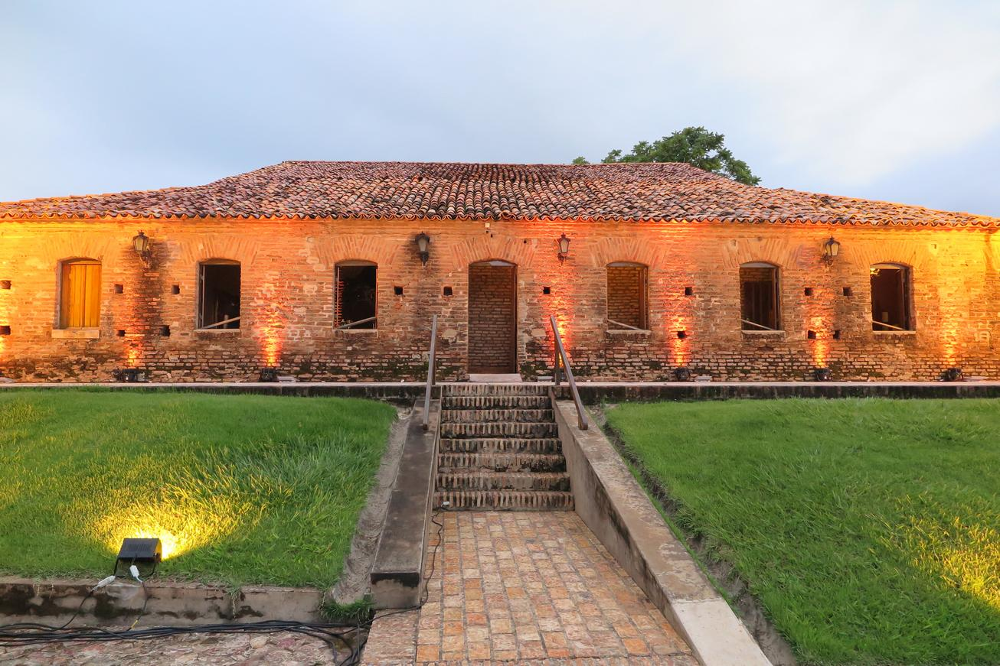

Engenho Tupinambá
O Engenho Tupinambá, patrimônio cultural e arquitetônico de Barbalha, remonta ao auge da produção canavieira no Cariri e hoje integra a Rota Cariri, projeto que busca impulsionar o turismo na região. Fundado em 1844 por Antônio Manoel Sampaio, o engenho foi expandido ao longo dos anos e se destacou na produção de rapadura, marcando a identidade econômica e social da região apelidada de "terra dos Verdes Canaviais".
Após décadas de abandono, o engenho foi parcialmente reconstruído por Heraldo Callou, neto de um dos antigos proprietários, utilizando os tijolos originais. Atualmente, com suas paredes rústicas e quase dois séculos de história, o espaço foi adaptado como buffet para eventos, preservando seu legado histórico e gerando recursos para sua manutenção. O Engenho Tupinambá é um testemunho vivo da riqueza cultural e econômica da história canavieira do Cariri.
 
